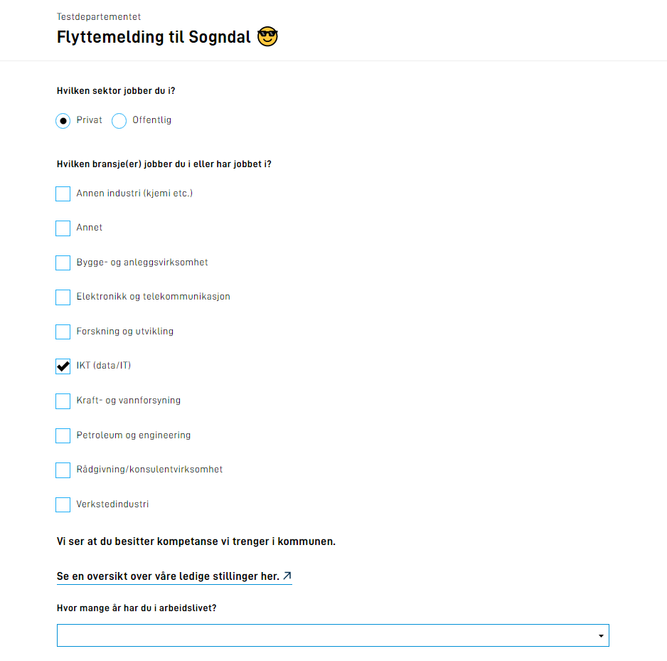
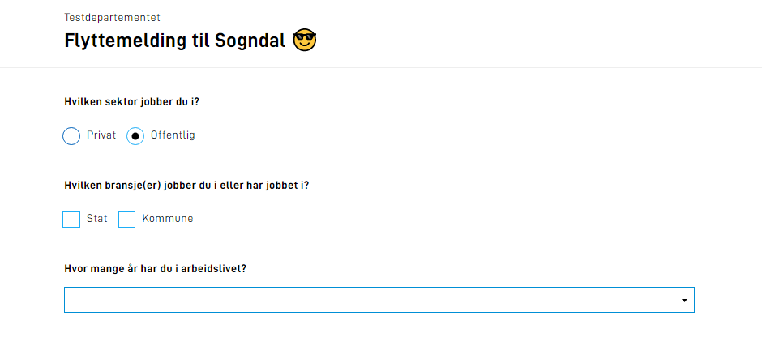

Bolk 4
Legge til kodelister manuelt, programatisk og dynamisk
I denne bolken skal du utvide applikasjonen du har laget i foregående bolker for å støtte enda fler av kravene til Sogndal kommune.
Temaer som dekkes i denne bolken:
- Kodelister/Options
- Dynamikk
Oppgaver
I mange applikasjoner er det behov for å gi brukeren et sett med svaralternativer for et datafelt.
Svaralternativene refereres dette til som kodelister eller options.
I Altinn Studio er dette støttet i form av radioknapper, avkrysningsbokser og nedtrekkslister.
Det er tre måter å sette opp kodelister i Altinn i dag
- Direkte på komponenten via Altinn Studio eller manuelt i FormLayout.json*
- I en statisk json-fil som referes til i komponenten
- Programmatisk i applikasjonslogikken
* kun tilgjengelig på radioknapp og avkrysningsboks
I denne oppgaven skal du få prøve deg på alle tre måtene å sette opp en kodeliste på.
Sogndal kommune ønsker å samle inn opplysninger om tilflytterens arbeidsituasjon. Blant dataen de ønsker å samle inn er hvilken sektor og bransje tilflytter jobber i, og hvor mange år tilflytter har vært yrkesaktiv.
I Altinn Studio
-
Opprett en ny skjemaside for å samle inn data om arbeidsforhold
-
Sett opp en radioknapp-komponent for Sektor opprett svaralternativene Offentlig og Privat manuelt.
-
Sett opp en avkrysningsboks for Bransje.
Velg Kodeliste som metode for å legge til avkrysningsboker og legg inn Kodeliste ID industry
Resten av oppsettet for denne komponenten gjøres lokalt.
-
Sett opp en nedrekksliste for År i arbeidslivet
Legg inn Kodeliste ID years-in-work-force
Resten av oppsettet for denne komponenten gjøres lokalt.
-
Commit og Push endringene dine til master,
og Pull endringene i ditt lokale utviklingsmiljø.
I lokalt utviklingsmiljø
-
Sogndal kommune har opprettet en kodeliste for bransjer. Last ned filen og plasser denne på rett sted i repoet.
-
Sett opp verdiene i kodelisten for År i arbeidslivet direkte i applikasjonslogikken.
Svaralternativer:
| Label |
Dataverdi |
| 0 - 5 år |
0-5 |
| 5 - 10 år |
5-10 |
| 10 - 20 år |
10-20 |
| 20+ år |
20+ |
-
Verifiser at alle kodelister fungerer som forventet.
Nyttig dokumentasjon
Forståelsessjekk
- Hva er forskjellen på statiske og dynamiske options?
- Hva vil være et bruksområde for sikrede dynamiske options?
I noen tilfeller kan verdiene som skal vises fram i en kodeliste være knyttet til et annet felt i skjemaet.
Sogndal kommune ønsker at listen av bransjer å velge mellom skal spisses til hvilken sektor man jobber i.
Les gjennom kravene til kommunen for å se om du kan hjelpe dem.
Krav fra kommunen
Vi ønsker at brukeren skal ha et ulikt sett med svaralternativer for bransje-valget
basert på hvilken sektor de har krysset av for.
Nyttig dokumentasjon
Forståelsessjekk
- Om en option-liste er satt opp med en mapping mot datamodellen - hva skjer når det aktuell feltet endrer verdi?
- Hva skjer med valgt verdi på et felt som er koblet til en option-liste som hentes på nytt fra server siden?
Krav fra kommunen
Vi ønsker at dersom brukeren velger IKT (data/it) under bransje at det vises en tekst med en lenke til en av våre stillingsutlysninger.
-
Under bransje-valget skal følgende tekst presenteres
Vi ser at du besitter kompetanse vi trenger i kommunen.
Se en oversikt over våre ledige stillinger her.
-
Linje 2 i teksten skal være en hyperlenke som peker på:
https://sogndal.easycruit.com/index.html
Tekst og lenke skal kun vises om man har valgt IKT (data/it) i alle andre tilfeller skal dette være skjult.
Nyttig dokumentasjon
Forståelsessjekk
- Hvis du legger til en ny funksjon i
RuleHandlerHelper - hvor kjøres disse funksjonene?
- Vil dynamikk fungere uten denne definert?
- Hvis du legger til en ny funksjon i
RuleHandlerObject - hvor kjøres disse funksjonene?
- Vil dynamikk fungere uten denne definert?
- Hva er sammenhengen mellom funksjoner definert i
RuleHandlerObject og filen RuleConfiguration.json?
Oppsummering
I denne bolken har du satt opp nedtrekksliste, radioknapp og avkrysningsbokser og lagt inn verdier for disse komponentene manuelt, programatisk og dynamisk.
Tjenesten skal kunne kjøres opp på din lokale maskin med local test
og du skal kunne validere at komponentene presenterer forventede dataverdier.
Husk å pushe de lokale endringene dine, så de blir tilgjengelig i Altinn Studio når du er fornøyd
Løsningsforslag
Dersom du ikke har fått til alle stegene har vi et løsningsforslag som du kan hente inspirasjon fra.

